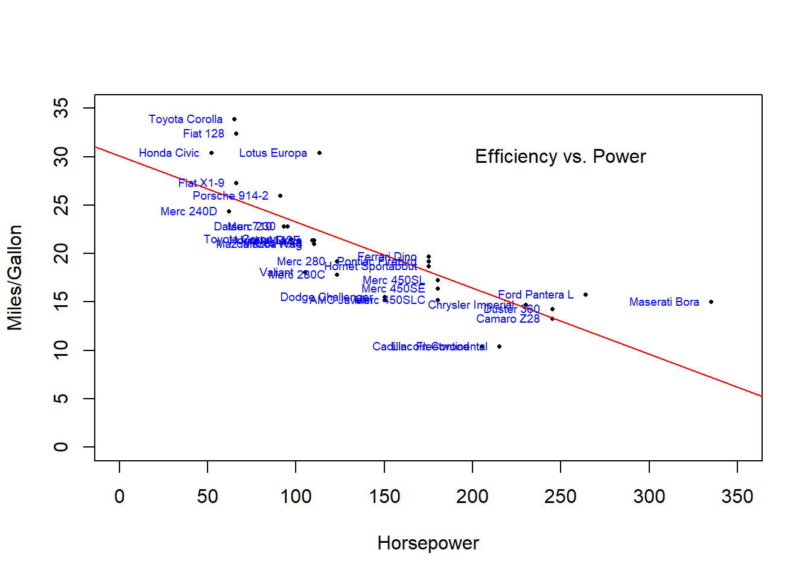
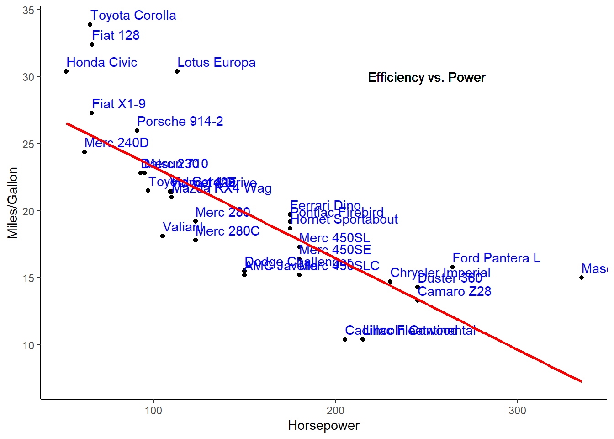

Welcome to the transformation step. This is where 90% of your time will likely be spent in R (and data science as a whole). Before you begin this step in any project, it is highly recommended to install necessary packages from tidyverse. While installing all of tidyverse is an option, it often takes a lot of time and space so it may not always be the best option. For now, we decided to be lazy and install the entire thing with install.packages('tidyverse') and load it with
For beginner users, the main packages within tidyverse are dplyr and tidyr. An overview of each can be found below:
dplyr / tidyr
dplyr and tidyr are two very powerful tools for data transformation as they use easy-to-write (and read) syntax and do a lot of behind-the-scenes work to make your job easier. For instance, say we have the large library dataset from the import page. We can import it with the same read.csv() function but then select only the columns we are interested in and rename them with the select() function. Additionally, instead of nesting functions inside one another, we can use the pipe (%>%) operator to accomplish the same thing. The way the pipe operator works is by passing the object on the left into the first argument of the object on the right. This means that the first argument of the object on the right MUST take a data object. Otherwise, in most other cases you can specify data = .. Let’s look at this example below:
Now say that we wanted to shrink the data so that every observation (row) represented the average number of checkouts for a particular patron type in a particular month. We could accomplish this as such:
There are two things to notice with the above code. First is that we used the %>% operator twice in a row to progressively manipulate our data. The first time was to group our data by patron type then active month and the second was to take the result of the grouping and find the average number of checkouts for each group. The second thing to take note of was the use of two new functions: group_by() and summarise().
group_by():
unlike select() and summarise() the group_by function doesn’t actually change the structure of our data. Instead, it creates symbolic groups within our data over which we can perform summarizing functions (sum, mean, standard deviation).
summarise():
applies a function for all observations within each group. If no group is present, then the function is applied column-wise. In this particular instance, we found the average (mean(.,na.rm=T)) number of checkouts per patron type for each month of the year (group_by(Patron_Type, active_month)). We then rounded all numbers down to the nearest whole number with the floor() function.
If we wanted to pivot the data and have a column for each active month, we could do so using:
Additionally, we could add a total column with the rowwise() and mutate() functions:
library %>%
filter(active_month != "None") %>%
spread(active_month,checkouts_avg, fill = 0) %>%
select(Patron_Type, January, February, March, April, May, June, July, August, September, October, November, December) %>%
rowwise() %>%
mutate(Total = sum(January, February, March, April, May, June, July, August, September, October, November, December))
If we only care about the five patron types with the highest average number of annual checkouts, we could add the top_n() function. Then we might choose to arrange them from largest to smallest value and only display the patron type and total average number of checkouts:
library %>%
filter(active_month != "None") %>%
spread(active_month,checkouts_avg, fill = 0) %>%
select(Patron_Type, January, February, March, April, May, June, July, August, September, October, November, December) %>%
rowwise() %>%
mutate(Total = sum(January, February, March, April, May, June, July, August, September, October, November, December)) %>%
ungroup() %>%
top_n(5,Total) %>%
arrange(desc(Total)) %>%
select(Patron_Type, Total)
As demonstrated by the process above, using plyr and dplyr creates a natural, readable code chunk that performs powerful transformations. Let’s take a look at our last code chunk again, this time with comments outlining the purpose of each step:
library %>% # Select the library dataset
filter(active_month != "None") %>% # filter for every month except those labled as 'None'
spread(active_month,checkouts_avg, fill = 0) %>% # Create new columns for every month containing the average checkouts as values
select(Patron_Type, January, February, March, April, May, June, July, August, September, October, November, December) %>% # rearrange the month order
rowwise() %>% # the following calculation will be done for each row instead of each column
mutate(Total = sum(January, February, March, April, May, June, July, August, September, October, November, December)) %>% #Add a total column that adds the values for each month
ungroup() %>% # Stop calculating values on each row
top_n(5,Total) %>% # select the top 5 rows based on the total column
arrange(desc(Total)) %>% # sort them from greatest to least Total value
select(Patron_Type, Total) # display only the patron_type and total columns
You can see that the dplyr syntax is almost as easily readable (and shorter) than plain English. This is what makes it so powerful.
Visualize
Base R
The default plotting functions available in R are very powerful and are usually the choice of academic researchers as they are clear and to-the-point. However, the syntax for constructing figures in this framework is a bit cumbersome and the behavior of these figures can often be confusing.
Below is a (fairly) simple scatter plot without much styling.
plot(mpg~hp,data = mtcars,
pch = 16, cex = 0.5,
xlab = 'Horsepower',
ylab = 'Miles/Gallon',
xlim = c(0,350),
ylim = c(0,35))
abline(lm(mpg~hp,data = mtcars),
col = 'Red')
text(x = 250, y = 30,
'Efficiency vs. Power')
text(mtcars$hp, mtcars$mpg,
row.names(mtcars),
cex = 0.6, pos = 2,
col = 'blue')

As you can see, all of the necessary pieces are included but the sytax is a bit confusing and it looks a little boring. We can compare this implementation to the one in the next section which uses the ggplot2 package.
ggplot2
The ggplot2 packages greatly streamlines the plotting process. It uses pipes (just like dplyr) to add various pieces to your figure. If we were to recreate the plot above in the ggplot syntax, it would like like so:

While there is no correct way to plot in R, individuals are often drawn to one method over the other. The benefit of using ggplot is that you can pipe your data into the figure directly after altering it with dplyr commands. This is done with the pipe operator like we executed above (mtcars %>% ggplot(aes(hp,mpg)) + geom_point())
You can read more about ggplot here or brows their documentation here
plotly
Plotly takes all of the benefits and syntax of ggplot and adds interactive functionality! This is great for a customer facing figure or one that is used for data discovery. However, take note that plotly figures are MUCH larger and take longer to render than base-r and ggplot figures. This is especially evident with large datasets. Additionally, an instance of R needs to be running in order to leverage a plotly figure.
require(plotly)
a <- list( gridcolor = toRGB("white"), linecolor = toRGB("white"),
backgroundcolor = toRGB("black"), color = toRGB('black'),
showbackground = TRUE)
plot_ly(mtcars, x = ~wt, y = ~hp, z = ~mpg, text = rownames(mtcars),
marker = list(color = toRGB('green'),
line = list(color = toRGB('white')),
sizeref = 0.15, sizemode = "area")) %>%
add_markers(size = ~cyl) %>%
layout(scene = list(xaxis = a, yaxis = a, zaxis = a,
bgcolor = 'transparent'),
paper_bgcolor = 'transparent')
LS0tDQp0aXRsZTogIlRyYW5zZm9ybSBhbmQgVmlzdWFsaXplICINCmRhdGU6ICJVcGRhdGVkOiBgciBTeXMuRGF0ZSgpYCINCm91dHB1dDogaHRtbF9kb2N1bWVudA0KLS0tDQoNCmBgYHtyIHNldHVwLCBpbmNsdWRlPUZBTFNFfQ0Ka25pdHI6Om9wdHNfY2h1bmskc2V0KGVjaG8gPSBUUlVFKQ0Ka25pdHI6Om9wdHNfY2h1bmskc2V0KCkNCmBgYA0KDQpXZWxjb21lIHRvIHRoZSB0cmFuc2Zvcm1hdGlvbiBzdGVwLiBUaGlzIGlzIHdoZXJlIDkwJSBvZiB5b3VyIHRpbWUgd2lsbCBsaWtlbHkgYmUgc3BlbnQgaW4gUiAoYW5kIGRhdGEgc2NpZW5jZSBhcyBhIHdob2xlKS4gQmVmb3JlIHlvdSBiZWdpbiB0aGlzIHN0ZXAgaW4gYW55IHByb2plY3QsIGl0IGlzIGhpZ2hseSByZWNvbW1lbmRlZCB0byBpbnN0YWxsIG5lY2Vzc2FyeSBwYWNrYWdlcyBmcm9tIGB0aWR5dmVyc2VgLiBXaGlsZSBpbnN0YWxsaW5nIGFsbCBvZiB0aWR5dmVyc2UgaXMgYW4gb3B0aW9uLCBpdCBvZnRlbiB0YWtlcyBhIGxvdCBvZiB0aW1lIGFuZCBzcGFjZSBzbyBpdCBtYXkgbm90IGFsd2F5cyBiZSB0aGUgKmJlc3QqIG9wdGlvbi4gRm9yIG5vdywgd2UgZGVjaWRlZCB0byBiZSBsYXp5IGFuZCBpbnN0YWxsIHRoZSBlbnRpcmUgdGhpbmcgd2l0aCBgaW5zdGFsbC5wYWNrYWdlcygndGlkeXZlcnNlJylgIGFuZCBsb2FkIGl0IHdpdGggDQoNCmBgYHtyIG1lc3NhZ2U9RkFMU0V9DQpsaWJyYXJ5KHRpZHl2ZXJzZSkNCmBgYA0KDQpGb3IgYmVnaW5uZXIgdXNlcnMsIHRoZSBtYWluIHBhY2thZ2VzIHdpdGhpbiB0aWR5dmVyc2UgYXJlIGRwbHlyIGFuZCB0aWR5ci4gQW4gb3ZlcnZpZXcgb2YgZWFjaCBjYW4gYmUgZm91bmQgYmVsb3c6DQoNCiMjIGRwbHlyIC8gdGlkeXINCg0KYGRwbHlyYCBhbmQgYHRpZHlyYCBhcmUgdHdvIHZlcnkgcG93ZXJmdWwgdG9vbHMgZm9yIGRhdGEgdHJhbnNmb3JtYXRpb24gYXMgdGhleSB1c2UgZWFzeS10by13cml0ZSAoYW5kIHJlYWQpIHN5bnRheCBhbmQgZG8gYSBsb3Qgb2YgYmVoaW5kLXRoZS1zY2VuZXMgd29yayB0byBtYWtlIHlvdXIgam9iIGVhc2llci4gRm9yIGluc3RhbmNlLCBzYXkgd2UgaGF2ZSB0aGUgbGFyZ2UgbGlicmFyeSBkYXRhc2V0IGZyb20gdGhlIFtpbXBvcnRdKEltcG9ydC5odG1sKSBwYWdlLiBXZSBjYW4gaW1wb3J0IGl0IHdpdGggdGhlIHNhbWUgYHJlYWQuY3N2KClgIGZ1bmN0aW9uIGJ1dCB0aGVuIHNlbGVjdCBvbmx5IHRoZSBjb2x1bW5zIHdlIGFyZSBpbnRlcmVzdGVkIGluIGFuZCByZW5hbWUgdGhlbSB3aXRoIHRoZSBgc2VsZWN0KClgIGZ1bmN0aW9uLiBBZGRpdGlvbmFsbHksIGluc3RlYWQgb2YgbmVzdGluZyBmdW5jdGlvbnMgaW5zaWRlIG9uZSBhbm90aGVyLCB3ZSBjYW4gdXNlIHRoZSBwaXBlIChgJT4lYCkgb3BlcmF0b3IgdG8gYWNjb21wbGlzaCB0aGUgc2FtZSB0aGluZy4gVGhlIHdheSB0aGUgcGlwZSBvcGVyYXRvciB3b3JrcyBpcyBieSBwYXNzaW5nIHRoZSBvYmplY3Qgb24gdGhlIGxlZnQgaW50byB0aGUgZmlyc3QgYXJndW1lbnQgb2YgdGhlIG9iamVjdCBvbiB0aGUgcmlnaHQuIFRoaXMgbWVhbnMgdGhhdCB0aGUgZmlyc3QgYXJndW1lbnQgb2YgdGhlIG9iamVjdCBvbiB0aGUgcmlnaHQgTVVTVCB0YWtlIGEgZGF0YSBvYmplY3QuIE90aGVyd2lzZSwgaW4gbW9zdCBvdGhlciBjYXNlcyB5b3UgY2FuIHNwZWNpZnkgYGRhdGEgPSAuYC4gTGV0J3MgbG9vayBhdCB0aGlzIGV4YW1wbGUgYmVsb3c6IA0KDQpgYGB7cn0NCmxpYnJhcnkgPC0gcmVhZC5jc3YoImh0dHBzOi8vZGF0YS5zZmdvdi5vcmcvYXBpL3ZpZXdzL3F6ejYtMmp1cC9yb3dzLmNzdiIpICU+JQ0KICBzZWxlY3QoUGF0cm9uX1R5cGUgPSBQYXRyb24uVHlwZS5EZWZpbml0aW9uLCBjaGVja291dHMgPSBUb3RhbC5DaGVja291dHMsDQogICAgICAgICBhY3RpdmVfbW9udGggPSBDaXJjdWxhdGlvbi5BY3RpdmUuTW9udGgpDQpoZWFkKGxpYnJhcnkpDQpgYGANCg0KTm93IHNheSB0aGF0IHdlIHdhbnRlZCB0byBzaHJpbmsgdGhlIGRhdGEgc28gdGhhdCBldmVyeSBvYnNlcnZhdGlvbiAocm93KSByZXByZXNlbnRlZCB0aGUgYXZlcmFnZSBudW1iZXIgb2YgY2hlY2tvdXRzIGZvciBhIHBhcnRpY3VsYXIgcGF0cm9uIHR5cGUgaW4gYSBwYXJ0aWN1bGFyIG1vbnRoLiBXZSBjb3VsZCBhY2NvbXBsaXNoIHRoaXMgYXMgc3VjaDogDQoNCmBgYHtyfQ0KaGVhZChsaWJyYXJ5IDwtIGxpYnJhcnkgJT4lDQogIGdyb3VwX2J5KFBhdHJvbl9UeXBlLCBhY3RpdmVfbW9udGgpICU+JQ0KICBzdW1tYXJpc2UoY2hlY2tvdXRzX2F2ZyA9IGZsb29yKG1lYW4oY2hlY2tvdXRzLCBuYS5ybSA9IFQpKSksMTUpDQpgYGANCg0KVGhlcmUgYXJlIHR3byB0aGluZ3MgdG8gbm90aWNlIHdpdGggdGhlIGFib3ZlIGNvZGUuIEZpcnN0IGlzIHRoYXQgd2UgdXNlZCB0aGUgYCU+JWAgb3BlcmF0b3IgdHdpY2UgaW4gYSByb3cgdG8gcHJvZ3Jlc3NpdmVseSBtYW5pcHVsYXRlIG91ciBkYXRhLiBUaGUgZmlyc3QgdGltZSB3YXMgdG8gZ3JvdXAgb3VyIGRhdGEgYnkgcGF0cm9uIHR5cGUgKnRoZW4qIGFjdGl2ZSBtb250aCBhbmQgdGhlIHNlY29uZCB3YXMgdG8gdGFrZSB0aGUgcmVzdWx0IG9mIHRoZSBncm91cGluZyBhbmQgZmluZCB0aGUgYXZlcmFnZSBudW1iZXIgb2YgY2hlY2tvdXRzIGZvciBlYWNoIGdyb3VwLiBUaGUgc2Vjb25kIHRoaW5nIHRvIHRha2Ugbm90ZSBvZiB3YXMgdGhlIHVzZSBvZiB0d28gbmV3IGZ1bmN0aW9uczogYGdyb3VwX2J5KClgIGFuZCBgc3VtbWFyaXNlKClgLiANCg0KKipncm91cF9ieSgpOioqDQoNCnVubGlrZSBzZWxlY3QoKSBhbmQgc3VtbWFyaXNlKCkgdGhlIGdyb3VwX2J5IGZ1bmN0aW9uIGRvZXNuJ3QgYWN0dWFsbHkgY2hhbmdlIHRoZSBzdHJ1Y3R1cmUgb2Ygb3VyIGRhdGEuIEluc3RlYWQsIGl0IGNyZWF0ZXMgc3ltYm9saWMgZ3JvdXBzIHdpdGhpbiBvdXIgZGF0YSBvdmVyIHdoaWNoIHdlIGNhbiBwZXJmb3JtIHN1bW1hcml6aW5nIGZ1bmN0aW9ucyAoc3VtLCBtZWFuLCBzdGFuZGFyZCBkZXZpYXRpb24pLiANCg0KKipzdW1tYXJpc2UoKToqKg0KDQphcHBsaWVzIGEgZnVuY3Rpb24gZm9yIGFsbCBvYnNlcnZhdGlvbnMgd2l0aGluIGVhY2ggZ3JvdXAuIElmIG5vIGdyb3VwIGlzIHByZXNlbnQsIHRoZW4gdGhlIGZ1bmN0aW9uIGlzIGFwcGxpZWQgY29sdW1uLXdpc2UuIEluIHRoaXMgcGFydGljdWxhciBpbnN0YW5jZSwgd2UgZm91bmQgdGhlIGF2ZXJhZ2UgKGBtZWFuKC4sbmEucm09VClgKSBudW1iZXIgb2YgY2hlY2tvdXRzIHBlciBwYXRyb24gdHlwZSBmb3IgZWFjaCBtb250aCBvZiB0aGUgeWVhciAoYGdyb3VwX2J5KFBhdHJvbl9UeXBlLCBhY3RpdmVfbW9udGgpYCkuIFdlIHRoZW4gcm91bmRlZCBhbGwgbnVtYmVycyBkb3duIHRvIHRoZSBuZWFyZXN0IHdob2xlIG51bWJlciB3aXRoIHRoZSBgZmxvb3IoKWAgZnVuY3Rpb24uIA0KDQpJZiB3ZSB3YW50ZWQgdG8gcGl2b3QgdGhlIGRhdGEgYW5kIGhhdmUgYSBjb2x1bW4gZm9yIGVhY2ggYWN0aXZlIG1vbnRoLCB3ZSBjb3VsZCBkbyBzbyB1c2luZzogDQoNCmBgYHtyfQ0KaGVhZChsaWJyYXJ5ICU+JQ0KICAgICAgIGZpbHRlcihhY3RpdmVfbW9udGggIT0gIk5vbmUiKSAlPiUNCiAgICAgICBzcHJlYWQoYWN0aXZlX21vbnRoLGNoZWNrb3V0c19hdmcpIA0KKQ0KYGBgDQoNCkFkZGl0aW9uYWxseSwgd2UgY291bGQgYWRkIGEgdG90YWwgY29sdW1uIHdpdGggdGhlIGByb3d3aXNlKClgIGFuZCBgbXV0YXRlKClgIGZ1bmN0aW9uczogDQoNCmBgYHtyfQ0KbGlicmFyeSAlPiUNCiAgZmlsdGVyKGFjdGl2ZV9tb250aCAhPSAiTm9uZSIpICU+JQ0KICBzcHJlYWQoYWN0aXZlX21vbnRoLGNoZWNrb3V0c19hdmcsIGZpbGwgPSAwKSAlPiUNCiAgc2VsZWN0KFBhdHJvbl9UeXBlLCBKYW51YXJ5LCBGZWJydWFyeSwgTWFyY2gsIEFwcmlsLCBNYXksIEp1bmUsIEp1bHksIEF1Z3VzdCwgU2VwdGVtYmVyLCBPY3RvYmVyLCBOb3ZlbWJlciwgRGVjZW1iZXIpICU+JQ0KICByb3d3aXNlKCkgJT4lDQogIG11dGF0ZShUb3RhbCA9IHN1bShKYW51YXJ5LCBGZWJydWFyeSwgTWFyY2gsIEFwcmlsLCBNYXksIEp1bmUsIEp1bHksIEF1Z3VzdCwgU2VwdGVtYmVyLCBPY3RvYmVyLCBOb3ZlbWJlciwgRGVjZW1iZXIpKQ0KYGBgDQoNCklmIHdlIG9ubHkgY2FyZSBhYm91dCB0aGUgZml2ZSBwYXRyb24gdHlwZXMgd2l0aCB0aGUgaGlnaGVzdCBhdmVyYWdlIG51bWJlciBvZiBhbm51YWwgY2hlY2tvdXRzLCB3ZSBjb3VsZCBhZGQgdGhlIGB0b3BfbigpYCBmdW5jdGlvbi4gVGhlbiB3ZSBtaWdodCBjaG9vc2UgdG8gYXJyYW5nZSB0aGVtIGZyb20gbGFyZ2VzdCB0byBzbWFsbGVzdCB2YWx1ZSBhbmQgb25seSBkaXNwbGF5IHRoZSBwYXRyb24gdHlwZSBhbmQgdG90YWwgYXZlcmFnZSBudW1iZXIgb2YgY2hlY2tvdXRzOiANCg0KYGBge3J9DQpsaWJyYXJ5ICU+JQ0KICAgIGZpbHRlcihhY3RpdmVfbW9udGggIT0gIk5vbmUiKSAlPiUNCiAgICBzcHJlYWQoYWN0aXZlX21vbnRoLGNoZWNrb3V0c19hdmcsIGZpbGwgPSAwKSAlPiUNCiAgICBzZWxlY3QoUGF0cm9uX1R5cGUsIEphbnVhcnksIEZlYnJ1YXJ5LCBNYXJjaCwgQXByaWwsIE1heSwgSnVuZSwgSnVseSwgQXVndXN0LCBTZXB0ZW1iZXIsIE9jdG9iZXIsIE5vdmVtYmVyLCBEZWNlbWJlcikgJT4lDQogICAgcm93d2lzZSgpICU+JQ0KICAgIG11dGF0ZShUb3RhbCA9IHN1bShKYW51YXJ5LCBGZWJydWFyeSwgTWFyY2gsIEFwcmlsLCBNYXksIEp1bmUsIEp1bHksIEF1Z3VzdCwgU2VwdGVtYmVyLCBPY3RvYmVyLCBOb3ZlbWJlciwgRGVjZW1iZXIpKSAlPiUNCiAgICB1bmdyb3VwKCkgJT4lDQogICAgdG9wX24oNSxUb3RhbCkgJT4lDQogICAgYXJyYW5nZShkZXNjKFRvdGFsKSkgJT4lDQogICAgc2VsZWN0KFBhdHJvbl9UeXBlLCBUb3RhbCkNCmBgYA0KDQpBcyBkZW1vbnN0cmF0ZWQgYnkgdGhlIHByb2Nlc3MgYWJvdmUsIHVzaW5nIHBseXIgYW5kIGRwbHlyIGNyZWF0ZXMgYSBuYXR1cmFsLCByZWFkYWJsZSBjb2RlIGNodW5rIHRoYXQgcGVyZm9ybXMgcG93ZXJmdWwgdHJhbnNmb3JtYXRpb25zLiBMZXQncyB0YWtlIGEgbG9vayBhdCBvdXIgbGFzdCBjb2RlIGNodW5rIGFnYWluLCB0aGlzIHRpbWUgd2l0aCBjb21tZW50cyBvdXRsaW5pbmcgdGhlIHB1cnBvc2Ugb2YgZWFjaCBzdGVwOiANCg0KYGBge3IsIGV2YWw9RkFMU0V9DQpsaWJyYXJ5ICU+JSAjIFNlbGVjdCB0aGUgbGlicmFyeSBkYXRhc2V0DQogIGZpbHRlcihhY3RpdmVfbW9udGggIT0gIk5vbmUiKSAlPiUgIyBmaWx0ZXIgZm9yIGV2ZXJ5IG1vbnRoIGV4Y2VwdCB0aG9zZSBsYWJsZWQgYXMgJ05vbmUnDQogIHNwcmVhZChhY3RpdmVfbW9udGgsY2hlY2tvdXRzX2F2ZywgZmlsbCA9IDApICU+JSAjIENyZWF0ZSBuZXcgY29sdW1ucyBmb3IgZXZlcnkgbW9udGggY29udGFpbmluZyB0aGUgYXZlcmFnZSBjaGVja291dHMgYXMgdmFsdWVzDQogIHNlbGVjdChQYXRyb25fVHlwZSwgSmFudWFyeSwgRmVicnVhcnksIE1hcmNoLCBBcHJpbCwgTWF5LCBKdW5lLCBKdWx5LCBBdWd1c3QsIFNlcHRlbWJlciwgT2N0b2JlciwgTm92ZW1iZXIsIERlY2VtYmVyKSAlPiUgIyByZWFycmFuZ2UgdGhlIG1vbnRoIG9yZGVyDQogIHJvd3dpc2UoKSAlPiUgIyB0aGUgZm9sbG93aW5nIGNhbGN1bGF0aW9uIHdpbGwgYmUgZG9uZSBmb3IgZWFjaCByb3cgaW5zdGVhZCBvZiBlYWNoIGNvbHVtbg0KICBtdXRhdGUoVG90YWwgPSBzdW0oSmFudWFyeSwgRmVicnVhcnksIE1hcmNoLCBBcHJpbCwgTWF5LCBKdW5lLCBKdWx5LCBBdWd1c3QsIFNlcHRlbWJlciwgT2N0b2JlciwgTm92ZW1iZXIsIERlY2VtYmVyKSkgJT4lICNBZGQgYSB0b3RhbCBjb2x1bW4gdGhhdCBhZGRzIHRoZSB2YWx1ZXMgZm9yIGVhY2ggbW9udGgNCiAgdW5ncm91cCgpICU+JSAjIFN0b3AgY2FsY3VsYXRpbmcgdmFsdWVzIG9uIGVhY2ggcm93DQogIHRvcF9uKDUsVG90YWwpICU+JSAjIHNlbGVjdCB0aGUgdG9wIDUgcm93cyBiYXNlZCBvbiB0aGUgdG90YWwgY29sdW1uDQogIGFycmFuZ2UoZGVzYyhUb3RhbCkpICU+JSAjIHNvcnQgdGhlbSBmcm9tIGdyZWF0ZXN0IHRvIGxlYXN0IFRvdGFsIHZhbHVlDQogIHNlbGVjdChQYXRyb25fVHlwZSwgVG90YWwpICMgZGlzcGxheSBvbmx5IHRoZSBwYXRyb25fdHlwZSBhbmQgdG90YWwgY29sdW1ucw0KYGBgDQoNCllvdSBjYW4gc2VlIHRoYXQgdGhlIGRwbHlyIHN5bnRheCBpcyBhbG1vc3QgYXMgZWFzaWx5IHJlYWRhYmxlIChhbmQgc2hvcnRlcikgdGhhbiBwbGFpbiBFbmdsaXNoLiBUaGlzIGlzIHdoYXQgbWFrZXMgaXQgc28gcG93ZXJmdWwuIA0KDQojIyBWaXN1YWxpemUNCg0KIyMjIEJhc2UgUg0KDQpUaGUgZGVmYXVsdCBwbG90dGluZyBmdW5jdGlvbnMgYXZhaWxhYmxlIGluIFIgYXJlIHZlcnkgcG93ZXJmdWwgYW5kIGFyZSAqdXN1YWxseSogdGhlIGNob2ljZSBvZiBhY2FkZW1pYyByZXNlYXJjaGVycyBhcyB0aGV5IGFyZSBjbGVhciBhbmQgdG8tdGhlLXBvaW50LiBIb3dldmVyLCB0aGUgc3ludGF4IGZvciBjb25zdHJ1Y3RpbmcgZmlndXJlcyBpbiB0aGlzIGZyYW1ld29yayBpcyBhIGJpdCBjdW1iZXJzb21lIGFuZCB0aGUgYmVoYXZpb3Igb2YgdGhlc2UgZmlndXJlcyBjYW4gb2Z0ZW4gYmUgY29uZnVzaW5nLg0KDQpCZWxvdyBpcyBhIChmYWlybHkpIHNpbXBsZSBzY2F0dGVyIHBsb3Qgd2l0aG91dCBtdWNoIHN0eWxpbmcuIA0KDQpgYGB7cn0NCnBsb3QobXBnfmhwLGRhdGEgPSBtdGNhcnMsDQogICAgIHBjaCA9IDE2LCBjZXggPSAwLjUsDQogICAgIHhsYWIgPSAnSG9yc2Vwb3dlcicsDQogICAgIHlsYWIgPSAnTWlsZXMvR2FsbG9uJywNCiAgICAgeGxpbSA9IGMoMCwzNTApLA0KICAgICB5bGltID0gYygwLDM1KSkNCmFibGluZShsbShtcGd+aHAsZGF0YSA9IG10Y2FycyksDQogICAgICAgY29sID0gJ1JlZCcpDQp0ZXh0KHggPSAyNTAsIHkgPSAzMCwNCiAgICAgJ0VmZmljaWVuY3kgdnMuIFBvd2VyJykNCnRleHQobXRjYXJzJGhwLCBtdGNhcnMkbXBnLCANCiAgICAgcm93Lm5hbWVzKG10Y2FycyksIA0KICAgICBjZXggPSAwLjYsIHBvcyA9IDIsIA0KICAgICBjb2wgPSAnYmx1ZScpDQpgYGANCg0KQXMgeW91IGNhbiBzZWUsIGFsbCBvZiB0aGUgbmVjZXNzYXJ5IHBpZWNlcyBhcmUgaW5jbHVkZWQgYnV0IHRoZSBzeXRheCBpcyBhIGJpdCBjb25mdXNpbmcgYW5kIGl0IGxvb2tzIGEgbGl0dGxlIGJvcmluZy4gV2UgY2FuIGNvbXBhcmUgdGhpcyBpbXBsZW1lbnRhdGlvbiB0byB0aGUgb25lIGluIHRoZSBuZXh0IHNlY3Rpb24gd2hpY2ggdXNlcyB0aGUgYGdncGxvdDJgIHBhY2thZ2UuDQoNCiMjIyBnZ3Bsb3QyDQoNClRoZSBgZ2dwbG90MmAgcGFja2FnZXMgZ3JlYXRseSBzdHJlYW1saW5lcyB0aGUgcGxvdHRpbmcgcHJvY2Vzcy4gSXQgdXNlcyBwaXBlcyAoanVzdCBsaWtlIGRwbHlyKSB0byBhZGQgdmFyaW91cyBwaWVjZXMgdG8geW91ciBmaWd1cmUuIElmIHdlIHdlcmUgdG8gcmVjcmVhdGUgdGhlIHBsb3QgYWJvdmUgaW4gdGhlIGdncGxvdCBzeW50YXgsIGl0IHdvdWxkIGxpa2UgbGlrZSBzbzogDQoNCmBgYHtyIG1lc3NhZ2U9RkFMU0V9DQpyZXF1aXJlKGdncGxvdDIpIA0KcmVxdWlyZShkcGx5cikNCm10Y2FycyAlPiUNCiAgZ2dwbG90KGFlcyhocCwgbXBnKSkgKw0KICBnZW9tX3BvaW50KCkgKw0KICBnZW9tX3RleHQoYWVzKGxhYmVsID0gcm93bmFtZXMobXRjYXJzKSksDQogICAgaGp1c3QgPSAwLA0KICAgIHZqdXN0ID0gLTAuNSwNCiAgICBjb2xvciA9ICJibHVlIikgKw0KICBnZW9tX3RleHQoDQogICAgeCA9IDI1MCwgeSA9IDMwLA0KICAgIGFlcyhsYWJlbCA9ICJFZmZpY2llbmN5IHZzLiBQb3dlciIpKSArDQogIGdlb21fc21vb3RoKA0KICAgIG1ldGhvZCA9ICJsbSIsIA0KICAgIGNvbG9yID0gInJlZCIsDQogICAgc2UgPSBGKSArDQogIHhsYWIoIkhvcnNlcG93ZXIiKSArDQogIHlsYWIoIk1pbGVzL0dhbGxvbiIpICsNCiAgdGhlbWVfY2xhc3NpYygpDQpgYGANCg0KV2hpbGUgdGhlcmUgaXMgbm8gKipjb3JyZWN0Kiogd2F5IHRvIHBsb3QgaW4gUiwgaW5kaXZpZHVhbHMgYXJlIG9mdGVuIGRyYXduIHRvIG9uZSBtZXRob2Qgb3ZlciB0aGUgb3RoZXIuIFRoZSBiZW5lZml0IG9mIHVzaW5nIGdncGxvdCBpcyB0aGF0IHlvdSBjYW4gcGlwZSB5b3VyIGRhdGEgaW50byB0aGUgZmlndXJlIGRpcmVjdGx5IGFmdGVyIGFsdGVyaW5nIGl0IHdpdGggZHBseXIgY29tbWFuZHMuIFRoaXMgaXMgZG9uZSB3aXRoIHRoZSBwaXBlIG9wZXJhdG9yIGxpa2Ugd2UgZXhlY3V0ZWQgYWJvdmUgKGBtdGNhcnMgJT4lIGdncGxvdChhZXMoaHAsbXBnKSkgKyBnZW9tX3BvaW50KClgKQ0KDQpZb3UgY2FuIHJlYWQgbW9yZSBhYm91dCBnZ3Bsb3QgW2hlcmVdKGh0dHBzOi8vZ2dwbG90Mi50aWR5dmVyc2Uub3JnL2luZGV4Lmh0bWwpIG9yIGJyb3dzIHRoZWlyIGRvY3VtZW50YXRpb24gW2hlcmVdKGh0dHBzOi8vZ2dwbG90Mi50aWR5dmVyc2Uub3JnL3JlZmVyZW5jZS8pDQoNCiMjIyBwbG90bHkNCg0KUGxvdGx5IHRha2VzIGFsbCBvZiB0aGUgYmVuZWZpdHMgYW5kIHN5bnRheCBvZiBnZ3Bsb3QgYW5kIGFkZHMgaW50ZXJhY3RpdmUgZnVuY3Rpb25hbGl0eSEgVGhpcyBpcyBncmVhdCBmb3IgYSBjdXN0b21lciBmYWNpbmcgZmlndXJlIG9yIG9uZSB0aGF0IGlzIHVzZWQgZm9yIGRhdGEgZGlzY292ZXJ5LiBIb3dldmVyLCB0YWtlIG5vdGUgdGhhdCBwbG90bHkgZmlndXJlcyBhcmUgTVVDSCBsYXJnZXIgYW5kIHRha2UgbG9uZ2VyIHRvIHJlbmRlciB0aGFuIGJhc2UtciBhbmQgZ2dwbG90IGZpZ3VyZXMuIFRoaXMgaXMgZXNwZWNpYWxseSBldmlkZW50IHdpdGggbGFyZ2UgZGF0YXNldHMuIEFkZGl0aW9uYWxseSwgYW4gaW5zdGFuY2Ugb2YgUiBuZWVkcyB0byBiZSBydW5uaW5nIGluIG9yZGVyIHRvIGxldmVyYWdlIGEgcGxvdGx5IGZpZ3VyZS4gDQoNCmBgYHtyIHdhcm5pbmc9RkFMU0UsIG1lc3NhZ2U9RkFMU0V9DQpyZXF1aXJlKHBsb3RseSkNCmEgPC0gbGlzdCggIGdyaWRjb2xvciA9IHRvUkdCKCJ3aGl0ZSIpLCBsaW5lY29sb3IgPSB0b1JHQigid2hpdGUiKSwNCiAgICAgICAgICAgIGJhY2tncm91bmRjb2xvciA9IHRvUkdCKCJibGFjayIpLCBjb2xvciA9IHRvUkdCKCdibGFjaycpLA0KICAgICAgICAgICAgc2hvd2JhY2tncm91bmQgPSBUUlVFKQ0KcGxvdF9seShtdGNhcnMsIHggPSB+d3QsIHkgPSB+aHAsIHogPSB+bXBnLCB0ZXh0ID0gcm93bmFtZXMobXRjYXJzKSwNCiAgICAgICAgbWFya2VyID0gbGlzdChjb2xvciA9IHRvUkdCKCdncmVlbicpLA0KICAgICAgICAgICAgICAgICAgICAgIGxpbmUgPSBsaXN0KGNvbG9yID0gdG9SR0IoJ3doaXRlJykpLA0KICAgICAgICAgICAgICAgICAgICAgIHNpemVyZWYgPSAwLjE1LCBzaXplbW9kZSA9ICJhcmVhIikpICU+JQ0KICBhZGRfbWFya2VycyhzaXplID0gfmN5bCkgJT4lDQogIGxheW91dChzY2VuZSA9IGxpc3QoeGF4aXMgPSBhLCB5YXhpcyA9IGEsIHpheGlzID0gYSwNCiAgICAgICAgICAgICAgICAgICAgICBiZ2NvbG9yID0gJ3RyYW5zcGFyZW50JyksDQogICAgICAgICBwYXBlcl9iZ2NvbG9yID0gJ3RyYW5zcGFyZW50JykNCmBgYA0KDQoNCiMjIFNsaWRlIERlY2sNCg0KQWNjZXNzIHRoZSBzbGlkZSBkZWNrIGZvciB0aGlzIGNvbnRlbnQgYnkgY2xpY2tpbmcgdGhlIGltYWdlIGJlbG93OiANCg0KPGZvcm0gbWV0aG9kID0gImdldCIgYWN0aW9uID0gIi4vRmlsZXMvUHJlc2VudGF0aW9ucy9JbXBvcnRfVHJhbnNmb3JtX1Zpc3VhbGl6ZS5odG1sIj4NCiAgPGlucHV0IHR5cGU9ImltYWdlIiBzcmM9Ii4vRmlsZXMvSW1hZ2VzL0ltcG9ydFRyYW5zZm9ybVZpc3VhbGl6ZS5QTkciIGFsdCA9ICJEb3dubG9hZCIvPg0KPC9mb3JtPg0KDQoNCiMNCg0KDQo8ZGl2IGNsYXNzID0gInJvdyI+DQo8YSBocmVmID0gIi4vSW1wb3J0Lmh0bWwiPjxidXR0b24gY2xhc3M9ImJ0biBidG4tcHJpbWFyeSI+QmFjazwvYnV0dG9uPjwvYT4NCjxhIGhyZWYgPSAiLi9Nb2RlbC5odG1sIj48YnV0dG9uIGNsYXNzPSJidG4gYnRuLURlZmF1bHQiPkNvbnRpbnVlPC9idXR0b24+PC9hPg0KPC9kaXY+